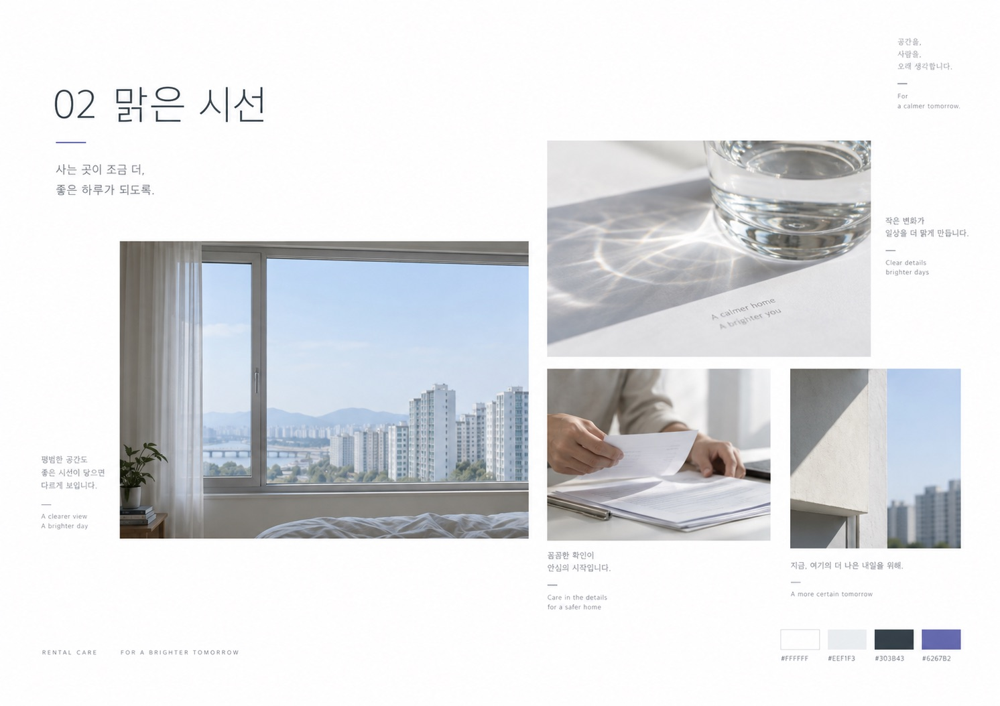

02 / CLEAR OBSERVATION
맑은 시선
창의 경계, 유리의 굴절, 정돈하는 손. 화이트 중심의 4단계 블루 스케일을 사용자 선정 색상 방향으로 확정했습니다. Air Blue는 공기감, Mist Blue는 보조면, Open Sky는 브랜드의 표정, Deep Sky는 정보의 중심을 맡습니다. 선명한 Sky Azure #46B5EC를 우선 포인트로 적용하고, Apricot Coral #F3A185를 비교 대안으로 제시합니다.

사진 분위기 참고용 이전 생성 보드입니다. 이미지 안 보라색 팔레트는 폐기되었으며 아래 4단계 블루가 선정 기준입니다. PNG 자체는 아직 재생성하지 않았습니다.색의 역할
전체 보드 구성 목표
사진 34% · 밝은 여백 58% · 설명·팔레트 6% · 강조 2%
사진 내부 색을 포함한 실제 픽셀 점유율은 별도 측정 전입니다.
사진을 제외한 일반 안내 화면 색 비율
배경 84% · Air Blue 보조면 6% · 정보색 6% · Deep Sky 2% · Sky Azure 2% · 비율은 미확정 시험값. Mist Blue·Open Sky는 화면 목적에 따라 교체 사용
이미지 선정 기준
중립적인 화이트밸런스 · 선명한 경계와 부드러운 그림자 · 간결한 정렬 · 사진 사이 큰 간격
임차in케어
변화를 알아보는, 맑고 차분한 시선.
계약과 거주 상황의 변화를 살피고,
준비할 일을 함께 확인합니다.
내 상황 확인하기 →타입은 중립 고딕의 밀도 확인용입니다. 포인트는 작은 면에 쓰고 긴 본문은 짙은 정보색으로 유지합니다.
CLEAR OBSERVATION · ACCENT COMPARISON
같은 화면, 두 가지 포인트
선정한 블루 스케일을 바탕으로 A안을 우선 적용합니다. 한 화면에서 두 포인트색을 함께 쓰지 않으며, 아래 예시는 Mist Blue·Open Sky를 덜어내 색 수를 줄였습니다.
A · 우선 적용
Sky Azure #46B5EC
사진 속 하늘과 연결되는 선명한 블루. 화이트와 Air Blue 위에서 작은 진입 표식으로 사용합니다.
임차in케어
변화를 먼저 살피고,
준비할 일을 함께.
다음 확인 예정
계약 종료 90일 전
내 상황 확인하기 →맑은 하늘의 생기 · 포인트는 표식·선·작은 그래픽에 적용. 버튼은 Deep Sky, 본문은 Slate.
화이트 84% · Air Blue 6% · Slate 6% · Deep Sky 2% · Sky Azure 2%
사진 제외 그래픽 영역의 시험값. 포인트는 화면별 1–3% 범위에서 검토합니다.
B · 비교 대안
Apricot Coral #F3A185
블루 바탕에 따뜻한 대비를 더합니다. 온기·여백 컨셉과 가까워질 수 있어 별도 비교안으로 둡니다.
임차in케어
변화를 먼저 살피고,
준비할 일을 함께.
다음 확인 예정
계약 종료 90일 전
내 상황 확인하기 →전문성에 더하는 사람의 온기 · 포인트는 표식·선·작은 그래픽에 적용. 버튼은 Deep Sky, 본문은 Slate.
화이트 84% · Air Blue 6% · Slate 6% · Deep Sky 2% · Apricot Coral 2%
사진 제외 그래픽 영역의 시험값. 포인트는 화면별 1–3% 범위에서 검토합니다.